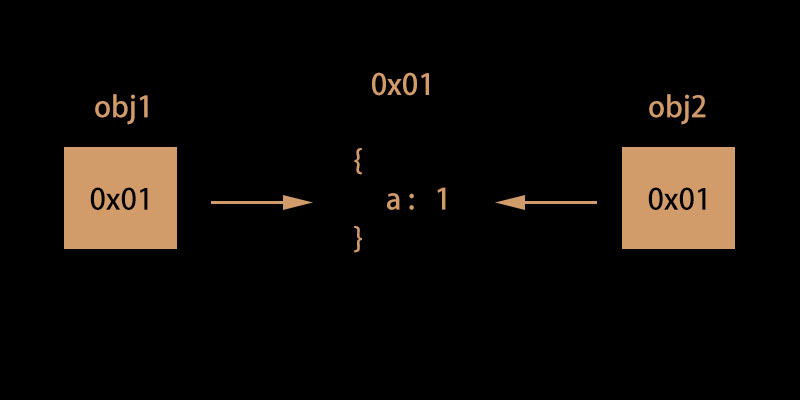
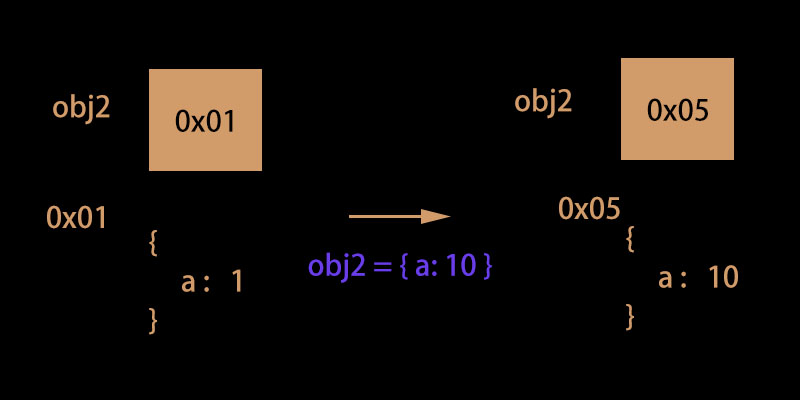
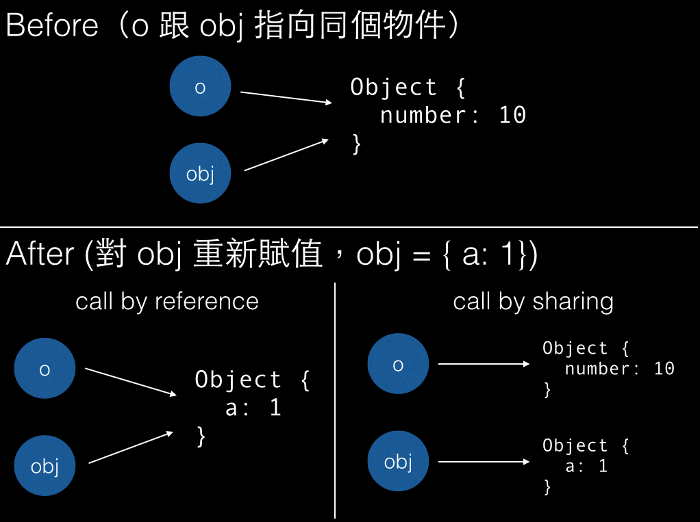

一個有點複雜的東西。
因為這個其實蠻複雜的，所以這裡希望你理解兩件事就好：
- 在 function 中修改引數的值會不會影響到外面的變數？
- JavaScript 中只有 pass by value 或 pass by sharing（嚴格來說是屬於 pass by value 的底下之一）
修改引數的值會不會影響到外面的變數？
先來看個例子：
1 | function swap(a, b) { |
這裡嘗試在 swap 中把兩個引數的值給交換，但顯然並不會影響到外面的變數（numberA，numberB）
也就是說可以把 function 想成是這樣子處理引數的：
1 | function swap(a, b) { |
有點類似於把 numberA 的「值」拷貝給 a，numberB 的「值」拷貝給 b。
不知道你還記得在 從 Object 的等號來真正理解變數 提到的變數儲存方式嗎？此時 numberA 儲存的是「10」這個值，所以 a = numberA 只是把 10 這個數字給 a 而已，不管我們對 a 做什麼，它都不應該影響到 numberA。
好，現在我們再看一個例子：
1 | function add(obj) { |
按照前面的思維，這樣子的結果是合理的，因為當變數儲存的是物件時，這個變數儲存的值會是一個「記憶體位址」，所以此時的 function 是這樣子做處理：
1 | function add(obj) { |
因為 obj 跟 myObj 儲存的都是同一個記憶體位址，所以當 obj 去做修改或新增的時候，也很合理的會改到 myObj，畢竟「改的都是同一個記憶體位址裡的東西」。
忘記的話再複習一下這張圖：

再來是最後一個例子：
1 | function add(obj) { |
用你原本的方式思考就好，在執行到 obj = {number: 50} 之前，其實都跟剛剛的情況是一樣的：
1 | function add(obj) { |
在 obj = {number: 50} 之後，obj 就已經被賦予一個新的記憶體位址，已經跟原本的 myObj 指向不同的地方，所以在之後不管你對 obj 做什麼，都不會影響到外面的 myObj。
忘記的話再複習一下這張圖：

pass by value ? pass by sharing
接下來要來解釋最開始提到的第二件事：JavaScript 中只有 pass by value 或 pass by sharing。
在變數儲存的是「非物件」的資料型態時（string, number, boolean），在 function 中修改引數的值不會影響到外面的值，這種行為我們稱為「pass by value」。
在變數儲存的是「物件」的資料型態時（object, array），在 function 中修改引數的值不會影響到外面的值，這種行為我們稱為「pass by sharing」。
至於為什麼稱為 pass by sharing 而不是 pass by reference？
根據我在網路上找的資料，pass by reference 的定義是重新賦值時也會影響到原本的變數。意思是說像剛剛 obj = {number: 50} 這個動作執行後 myObj 也會變成 {number: 50}。
不懂 pass by reference 跟 pass by sharing 的差異可以參考這張圖：

既然不是 pass by reference，那該叫什麼？就叫「pass by sharing」吧！可以把它想成是一種約定俗成。
不過如果你換個角度來思考的話，某種意義上 pass by sharing 也可以看做是一種 pass by value：
call by sharing（傳記憶體位置進去）其實就是 call by value 的一種，解釋的方式為：其實一樣是傳值的拷貝進去，只是這個值是記憶體位置。
但總而言之，我個人還是覺得分成 pass by value 跟 pass by sharing 的方式比較好理解。
總結
最後做個總結：
- 傳入 function 的變數是「非物件」型態，在 function 做任何修改都不會影響到原本的變數值。
- 傳入 function 的變數是 object ，在 function 裡做修改會影響到原本的變數值，但重新賦值不會。
另外想引用一下 Huli 的話：
搞清楚到底參數在操作的時候會有怎樣的行為。你要知道 JavaScript 傳 object 進去的時候，可以更改原本物件的值，但重新賦值並不會影響到外部的 object。只要知道這一點，其他的我覺得都沒那麼重要了。
其實這個問題好像一直都沒有最正確的解釋，但總而言之，我們其實想搞懂的是「函式怎麼操作引數」這件事，知道這樣就夠了。